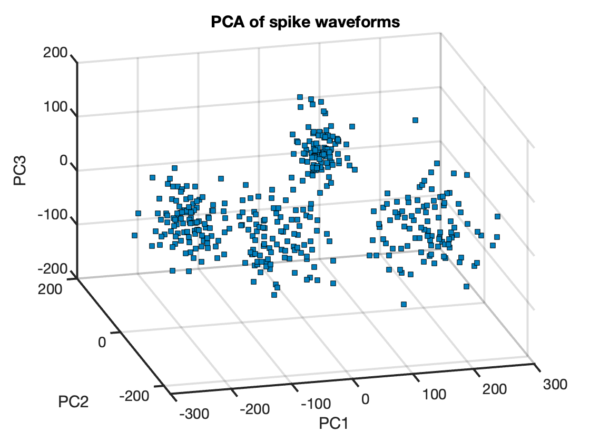
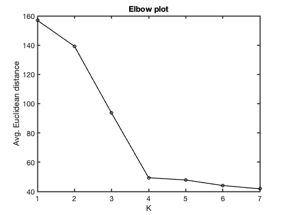
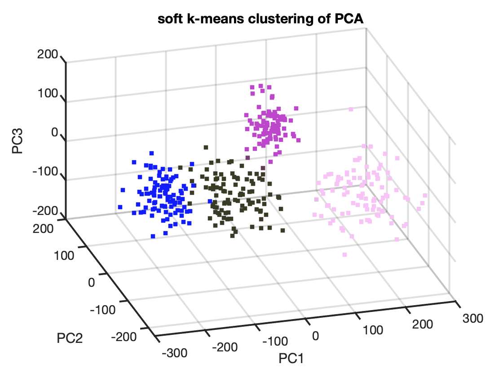

Contents
clear; close all; clc;
The extracellular neural recordings suggested that they arose from either 3 or 4 neurons using the preliminary analyses done in HW2. With the new tools of clustering, we now have a more elegant way of running the analyses to determine the number of neurons that are responsible for the data. First, we project the higher dimensional data onto a lower-dimnesions using PCA. This can be done by first running SVD. The first three columns of SVD are the PCs as MATLAB creates S with values in descending order. The PCA projected data can then be obtained simply by projecting the data onto these PCs.
load('windowedSpikes.mat') [U, S, V] = svd(data); % Peforming SVD on the data reduced_data = data * V(:, 1:3); % PCs are the first three columns of V figure(); scatter3(reduced_data(:, 1), reduced_data(:, 2), reduced_data(:, 3), ... 's', 'filled', 'MarkerEdgeColor','k', 'MarkerFaceColor', [0 .5 .75]) xlabel('PC1') ylabel('PC2') zlabel('PC3') title('PCA of spike waveforms') set(gca, 'FontSize', 14, 'LineWidth', 2)
This lower-dimensional data suggests that there are either 3 or 4 clusters present in it and hence it is likely that either 3 or 4 neurons are contribute to this data. However, to say definitively, we can run a k-mens clustering algorithm. Here a soft k-means is implemented that accounts for fuzziness in the clustering through a beta parameter in its cost function. Computing soft k-means for a range of k values, we can compute the average Euclidean distance between each datapoint and the centroid of the cluster that its assigned to. Plotting these distances gives an elbow plot that shows that the error is higher for smaller k values and decreases as a function of k. However, for higher values of k, these errors saturate out. The elbow method suggests that the smallest value of k, after which the average euclidean distance is negligible is an optimum number of clusters. From this elbow plot, we can see that K = 4 seems to be the best.
K = 1:7; avg_euc_ = zeros(length(K), 1); for kk = K [~, avg_euc_dist, ~] = soft_kmeans(reduced_data, kk, 1e3, 2); avg_euc_(kk) = avg_euc_dist; end figure() plot(K, avg_euc_, 'ko-', 'LineWidth', 1.5) xlabel('K') ylabel('Avg. Euclidean distance') set(gca, 'LineWidth', 2, 'FontSize', 14) title('Elbow plot')
Computing the cluster centers, responsibilities and color-coding each data point based on the cluster that its assigned to, we get:
kk = 4; [res, avg_euc_dist, centers] = soft_kmeans(reduced_data, kk, 1e3, 2); plot_soft_kmeans(reduced_data, res, kk)
Thus, we can see that K = 4 seems to be doing a good job at clustering this data. Hence we can say that these neural recordings most likely arose from 4 neurons.
figure()
Functions
function [res, avg_euc_dist, centers] = soft_kmeans(data, K, iters, beta) % For each iteration, the function computes the responsibility of each % datapoint to the cluster-centroid and based on these responsiblities % it then updates the centers. The process is repeated for the number % of iterations specified. Finally the average Euclidean distance is % computed for each datapoint from the centroid of the respective % cluster it is assigned to. [~, dim] = size(data); centers = randi([-10, 10], K, dim); for ii = 1:iters res = get_responsibilities(data, K, centers, beta); centers = compute_centers(data, K, res); end avg_euc_dist = avg_dist(data, res, centers); end function res = get_responsibilities(data, K, cen, beta) % computes responsibilites for data point to a given cluster defined by % its cluster centroid. The optimization function using a fuzziness % parameter beta controls the "softness" of clustering. The % responsibilities are normalized to have a unit sum. nPoints = size(data, 1); res = zeros(K, nPoints); for i = 1:K res(i, :) = exp(-beta * sqrt(sum(abs(data - cen(i, :)), 2))); end res = res./sum(res); end function center = compute_centers(data, K, responsibility) % Update the centers by computing an element-wise product of datapoints % to the responsibility of that datapoint to each cluster centroid. [nPoints, dim] = size(data); center = zeros(K, dim); total_res = sum(responsibility'); for kk = 1:K new_cen = zeros(1, dim); for jj = 1:nPoints new_cen = new_cen + data(jj, :) .* responsibility(kk, jj); end center(kk, :) = new_cen./total_res(1, kk); end end function avg_euc_dist = avg_dist(data, res, centers) % The Euclidean distance is computed between each datapoint and the % centroid of each cluster. The average Euclidean distance is then % computed as the mean of the Euclidean distances. euc_dist = zeros(length(data), 1); if isrow(res) % for the case of K = 1 for ii = 1:length(data) euc_dist(ii) = sqrt(sum(data(ii, :) - centers).^2); end else [~, class_selected] = max(res); for ii = 1:length(data) euc_dist(ii) = sqrt(sum(data(ii, :) - centers(class_selected(ii), :)).^2); end end avg_euc_dist = mean(euc_dist); end function plot_soft_kmeans(data, res, K) % This function plots the data with the random color codes based on the % clusters that they are assigned to random_colors = rand(K, 3); colors = res' * random_colors; scatter3(data(:, 1), data(:, 2), data(:, 3), [], colors, 's', 'filled') xlabel('PC1') ylabel('PC2') zlabel('PC3') title('soft k-means clustering of PCA') set(gca, 'FontSize', 14, 'LineWidth', 2) end